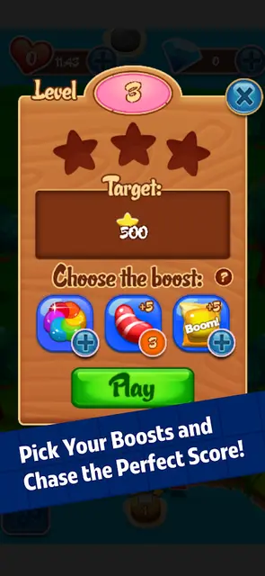
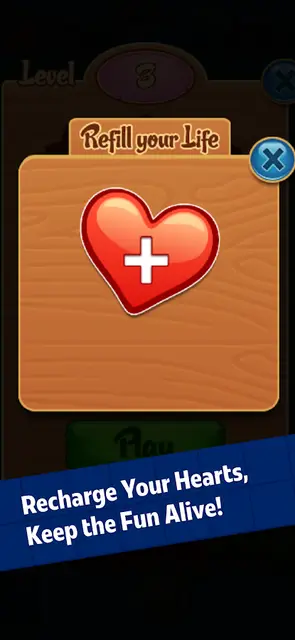
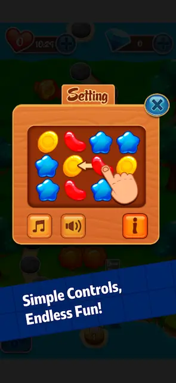

MATCH 3 PUZZLE GAME · ANDROID · GAMEFUSION STUDIO
Sweet Swirl Saga: A colorful match 3 candy puzzle adventure
Sweet Swirl Saga is a free match 3 candy puzzle game for Android. Swap and match colorful candies, unlock boosters and special combos, and play hundreds of levels, even offline.
- 💰 Free
- 📶 Plays offline
- 👪 Rated 3+
- 📱 Android
Contains ads · In-app purchases



About Sweet Swirl Saga
Sweet Swirl Saga is a bright, cheerful match 3 puzzle game full of colorful candies, satisfying combos and hundreds of levels to beat. Swap candies, line up three or more of the same color and watch the board burst with sweet chain reactions.
It's easy to learn but keeps getting more interesting, with special candies, boosters and daily rewards along the way. And yes, it plays offline, so your candy adventure goes wherever you go.
How to play Sweet Swirl Saga
- Swap two neighbouring candies to line up 3 or more of the same color.
- Complete each level's objective to move on to the next one.
- Match 4 or 5 candies at once to create powerful special candies.
- Combine special candies to trigger huge chain reactions and big scores.
Features
- Hundreds of match 3 levels with growing challenges
- Special candies and powerful boosters for massive combos
- Daily rewards and bonus prizes
- Offline play: no Wi-Fi needed
- Easy controls and smooth gameplay
- Colorful graphics and fun visual effects
- Free to download and play
- For kids, teens and adults
Tips to beat more levels
- Make matches near the bottom of the board. New candies fall in and can create free chain reactions.
- Save your special candies for when you can combine two of them. Combos are far stronger than single blasts.
- Always check the level objective first, so every move works toward the goal, not just points.
- Look for 4- and 5-candy matches before taking an easy 3-match.
Why you'll enjoy it
Match 3 games are a classic for a reason: quick to start, relaxing to play and rewarding to master. Sweet Swirl Saga adds bright candy visuals, satisfying combos and steady rewards, perfect for short breaks or a cosy evening.
Ready to play? Sweet Swirl Saga is free on Google Play.
GET IT ONGoogle PlayFrequently asked questions
Is Sweet Swirl Saga free?
Yes, it's free to download and play on Android. It contains ads and optional in-app purchases.
Can I play Sweet Swirl Saga offline?
Yes. You can play without an internet connection.
What kind of game is Sweet Swirl Saga?
It's a match 3 puzzle game: you swap candies to make lines of three or more matching colors and complete level goals.
Is it suitable for kids?
Yes. Sweet Swirl Saga is rated 3+ on Google Play and is made for players of all ages.
Where can I download it?
Sweet Swirl Saga is available on the Google Play Store for Android.